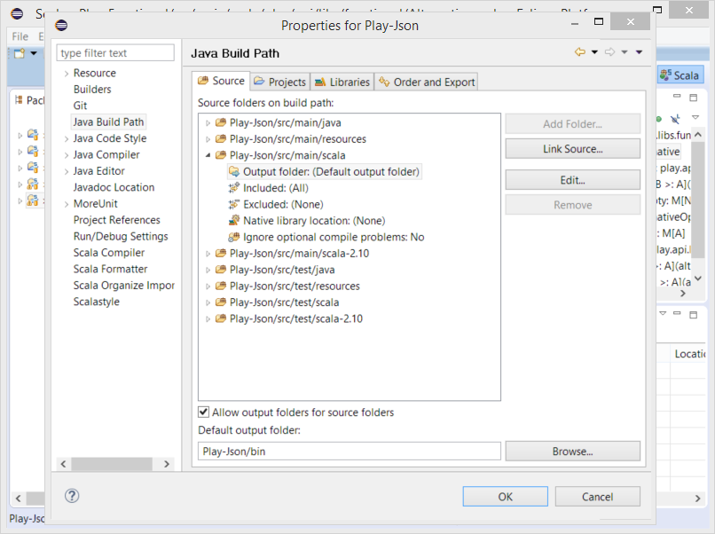

Scala Scopes Building new (since 4.1)
Scala IDE provides two different ways to build a project. The first and one takes all sources in a project and compiles them regardless where they are stored and what their output folders are. The second one breaks up the build process of a project into stages called scopes.
A Scope is a set of source files, which are compiled together and whose “product of compilation units” is stored in a specific output folder.
This feature has been designed to solve a problem of compiling macro code. Up to now macro code had to be moved to a separate project on which the main project depends on. With the Scala Scopes Builder macro code can be defined and used in the same project.
3 scopes are defined by convention:
macroswith the default source path:<project root>/src/macros*and especially for Play projects<project root>/conf*testswith the default source path:<project root>/src/test*and (because of Play projects)<project root>/test*mainwhich gets all source paths that don’t match macros and tests scopes
(* is just a wildcard so for example to tests scope are assigned sources from folders src/test, src/test-my-special)
The scopes are compiled in order: macros, main, tests. The compilation is conditional so if any compilation scope fails then further scopes are not compiled anymore. So when macros compilation fails then neither main nor tests are compiled. When macros compiles successfully and main fails then the tests scope is not compiled.
Of course the output folder of a particular scope is added to the classpath of the depending scopes. This means that the output of macros is added to main and tests classpaths and output of main is added to tests classpath.
Besides of scopes dependencies in a single project there are the dependencies defined across projects’ scopes too. When some given project (for simplicity let’s call it B) depends on another project (let’s call it A) then the dependencies between these two projects’ scopes are determined in the following way:
macrosof B depends onmacrosandmainof A (somacrosof B requires a successful compilation ofmacrosandmainscopes in project A)mainof B depends onmacrosandmainof Atestsof B depends onmacros,mainandtestsof A
Enabling scopes compilation
The feature is turned on by default. To suppress it go to the project properties: Right click on a project → Properties → Scala Compiler → Build manager and uncheck useScopesCompiler. Clean your project afterwards.

Changing the settings for existing project
If project already exists you can change its configuration to get advantage of scopes compilation and resolve problems with dependent builds in the following way:
Open project context menu and select path
Right click on a project → Properties → Java Build Path → Source.Check
Allow output folders for source folders.Edit
Output folderof chosen source folder and set your output folder. Click Ok.Clean the project.


{kind=link}
{kind=link}